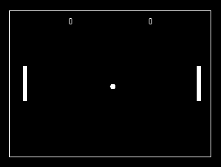

Pong
Apa Itu Pong ?
Pong adalah permainan video generasi pertama yang dirilis sebagai permainan arkade yang dioperasikan dengan koin yang dikembangkan oleh Atari Inc. pada tanggal 29 November, 1972. Pong didasari dari permainan atau olahraga tenis meja (Ping Pong), nama permainan ini berasal dari suara yang dihasilkan ketika memukul bola ping pong. Kata Pong telah didaftarkan sebagai merek dari Atari Interactive.
Sejarah Pong
Pong dengan cepat menjadi permainan komersial pertama yang sangat sukses, dan merupakan permulaan dari industri permainan video. Tak lama setelah dirilis, beberapa perusahaan berusaha menyalin permainan Pong, dan merilis beberapa permainan baru. Sehingga, Atari memberanikan pegawainya untuk membuat permainan yang lebih inovatif. Beberapa sekuel muncul dengan permainan yang sama, namun dengan fitur baru. Pada permulaan Natal 1975, Atari secara eksklusif merilis versi rumahan Pong via toko ritel Sears.
How to Play
Pong adalah permainan video olahraga dua dimensi yang mensimulasikan sebuah permainan tenis meja. Sang pemain mengerakan sebuah bat yang bergerak naik-turun, permainan ini dapat dimainkan dengan komputer atau dua orang yang mengerakan bat di sebelah kiri. Pemain memukul bola bolak-balik. Untuk memenangkan permainan, sang pemain harus memukul bola tersebut sampai sang lawan tidak bisa memukul bola tersebut. Wanna play ?